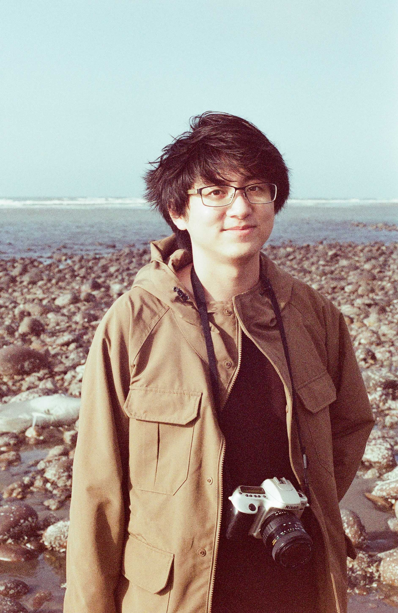

 I am now a PhD student at Kyoto University, studying experimental neutrino physics. Currently, I work on the Super-Kamiokande and Jiangmen Underground Neutrino Observatory collaboration with Prof. Roger Wendell and Prof. Guey-Lin Lin. More generally, I am interested in the rare neutrino events, such as Diffuse Supernovae Neutrino Background, MeV Dark Matter and the related background surpressing method (photon hit pattern with NN, CNN / pulse shape discrimination). Below is a simplified Super-K detertor simulator, inspired by WCSim. In general, we analyze the detector hit pattern to distinguish neutrinos from different physical targets, where a neutrino event typically produces numerous particles.
Outside of physics, I spend time writing, hiking, watching movies, cooking spagettie, and (most importantly) playing with my cat.
Click one of the particle buttons above to visualize its interaction in the detector.
Before coming to Kyoto Univ. I did my graduate at NYCU, undergraduate at National Taiwan Normal University. I graduated in June 2018 with a B.S. in Physics with physics teacher certificate in senier high school. As an undergrad, I worked with Prof. Yi-Jehng Kuan on Atacama Large Millimeter/submillimeter Array cycle-4 data analysis research, aim to claim a detection of important prebiotically molecular - pyrimidine.
| Inst. of Physics, National Yang Ming Chiao Tung University | |
| JUNO collaboration |
| indigo40123.py07g@nctu.edu.tw | |
| GitHub | |